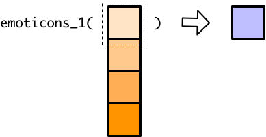

10 purrr inside mutate
In the vector functions unit, you learned that mutate() creates new columns by creating vectors that contain an element for each row in the tibble. You saw that you can do any of the following to create this vector:
- Give
mutate()a single value, which is then repeated for each row in the tibble. - Explicitly give
mutate()a vector with an element for each row in the tibble. - Create a vector using a vector function like
+orcase_when().
The purrr map functions are technically vector functions. They take a vector as input and return a vector of the same length as output. In this reading, we’ll show you how to use map functions inside mutate() to create a new column.
emoticons_1() is a simple scalar function that turns feelings into emoticons.
emoticons_1 <- function(x) {
if (x == "happy") {
":)"
} else if (x == "sad") {
":("
} else {
"Feeling too complex for emoticons"
}
}Recall that scalar functions take a single value and return a single value.

If you try to apply a scalar function to a vector, the scalar function will only process the first element of that vector.

Let’s say we want to use emoticons_1() to translate some feelings into emoticons. df is a small tibble that represents some feelings.
We can’t just use mutate() and emoticons_1() to add a new column because, like we said, emoticons_1() can’t handle vectors.
df %>%
mutate(emoticon = emoticons_1(feeling))
#> Warning in if (x == "happy") {: the condition has length > 1 and only the first
#> element will be used
#> Warning in if (x == "sad") {: the condition has length > 1 and only the first
#> element will be used
#> # A tibble: 3 x 2
#> feeling emoticon
#> <chr> <chr>
#> 1 sad :(
#> 2 compunctious :(
#> 3 happy :(We could change emoticons_1() into a vector function by replacing if and else with if_else(), case_when(), or recode(). However, you often won’t have control over the source code of the functions you want to use, and there will be many circumstances when you can’t change a scalar function into a vector function.
Instead of turning emoticons_1() into a vector function, we’ll use map_chr() to apply emoticons_1() to each element of feeling, creating a vector of emoticons.
You already know how to apply map functions to ordinary vectors. Let’s pull feeling out of df to see what happens when we use map_chr() to apply emoticons_1().
feeling <- df$feeling
map_chr(feeling, emoticons_1)
#> [1] ":(" "Feeling too complex for emoticons"
#> [3] ":)"Now, we can plug this map statement into mutate() to apply emoticons_1() to each feeling in df.
df %>%
mutate(emoticon = map_chr(feeling, emoticons_1))
#> # A tibble: 3 x 2
#> feeling emoticon
#> <chr> <chr>
#> 1 sad :(
#> 2 compunctious Feeling too complex for emoticons
#> 3 happy :)map_chr() does the same thing inside mutate() as it does outside.
The feeling column is just a vector, so the entire vector of emotions is supplied to map_chr().

Then, map_chr() applies emoticons_1() to each element of feelings.

This results in a vector of values that mutate() can turn into a new column.

You can use a map function inside mutate() to apply any scalar function to each element of a column, but remember to think about which map variant you need. If the output type of the scalar function doesn’t match the map function suffix, you’ll get an error about coercion.
df %>%
mutate(emoticon = map_int(feeling, emoticons_1))
#> Error: `mutate()` argument `emoticon` errored.
#> ℹ `emoticon` is `map_int(feeling, emoticons_1)`.
#> x Can't coerce element 1 from a character to a integerThe map functions work exactly the same inside mutate() as they do outside. You still specify additional arguments by listing them after the function.
emoticons_2 <- function(x, default = "???") {
if (x == "happy") {
":)"
} else if (x == "sad") {
":("
} else {
default
}
}
df %>%
mutate(emoticon = map_chr(feeling, emoticons_2, default = NA_character_))
#> # A tibble: 3 x 2
#> feeling emoticon
#> <chr> <chr>
#> 1 sad :(
#> 2 compunctious <NA>
#> 3 happy :)You can also still create anonymous functions.
df %>%
mutate(statement = map_chr(feeling, ~ str_c("I feel ", emoticons_2(.))))
#> # A tibble: 3 x 2
#> feeling statement
#> <chr> <chr>
#> 1 sad I feel :(
#> 2 compunctious I feel ???
#> 3 happy I feel :)Remember that, in purrr functions, you start an anonymous function with ~. The . refers to one element of the feeling column at a time.
In the previous chapter, we demonstrated a strategy for creating anonymous functions. We’ll show you how to apply this strategy when working with purrr functions inside mutate().
The first step is still to assign an element of your input vector to .. Now, the input vector is a tibble column, so you’ll need to first pull out the tibble column before accessing the first element.
Next, you can build and test your function on ..
Finally, just copy and paste your function after a ~ inside your map call.